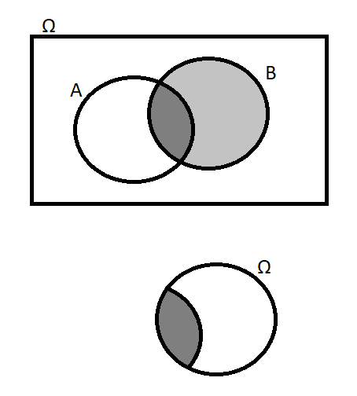

Probability¶
To develop a robust understanding of statistics, it is critical to understand basic concepts in probability theory. Probability theory is an entire branch of mathematics, and a very complicated one. Here I will give only the essentials as they have a direct bearing on statistics. I will leave many things out; what you see here is not a complete theory of probability.
Probability has at least two definitions¶
We think about probability every day, for example, for prediction. Given the weather report, is it worth it for me to carry an umbrella? As a practicing scientist, you might ask yourself a different kind of question every day: given the results of my experiments, how likely is it that my hypothesis is correct?
For such a familiar concept, probability is actually very philosophically thorny, and there are multiple interpretations of the concept of probability. Our intuitive sense of probability mostly aligns with the Bayesian interpretation, under which probability refers to a sense of confidence about an unknown thing, often a future event. If I say the probability of an event is 1%, it means, in a practical sense, that I'm willing to bet a fair amount of money it won't happen. Philosophically, it's hard to say what "1% confident" really means, but the concept should be very intuitive.
Unfortunately, Bayesian statistics is mathematically and technically challenging. It also requires an assertion of a prior probability: you must state the probability that your hypothesis was true before you started the experiment. The apparent subjectivity of prior probabilities was repugnant to some early, prominent statisticians, who mostly directed the field of statistics away from the Bayesian interpretation and toward the frequentist interpretation of probability.
In the frequentist interpretation, the probability of an outcome is the proportion, or frequency, of a that outcome when a trial is repeatedly many times. To say there is a 50% probability of flipping a coin and seeing heads means that, as you flip the coin over and over again, the proportion of flips that come up heads will approach 50%.
For technical, philosophical, and historical reasons, when we talked about "statistics" with no modifier, we mean frequentist statistics. For better or worse, frequentist is the default; Bayesian is the exception.
A frequentist interpretation cannot assign probabilities to states of nature¶
A problem with the frequentist definition is that probabilities can only be assigned to experiments or situations that can be repeated infinitely many times. It does not make sense to ask about the probability that it will rain tomorrow any more than it makes sense to ask about the probability than it makes sense to ask about the probability that it rained yesterday: it either rained or it didn't, either it will rain or it won't.
The fact that we live in just one universe means that, under the frequentist interpretation, you cannot ask about the probability of a state of nature. Critically, you cannot ask about the probability your hypothesis is correct. Your hypothesis is either correct or not, so the probability that it is correct is either zero or one. You just don't know which of those two possibilities is right!
As a scientist, this is deeply dissatisying. The whole point of statistical inference is to figure out what's going on in the world. I don't want to feed my hard-won experimental data into a statistical algorithm that says, "If your hypothesis is true, then it is; and if it's not, it's not."
Imagine that I show you a coin, then put my hands behind my back, and tell you the coin is in one of my hands. I ask you, "What is the probability the coin is in my left hand?" In the frequentist interpretation, probability is a fixed, objective thing. The fact that you know less than me about where the coin's location is irrelevant; the fact that the coin truly is in one hand or the other is all the frequentist interpretation knows.
The Bayesian approach is more appealing in that it does in fact allow you to ask about the probability of states of nature. There is such a thing as a Bayesian probability that it will rain tomorrow or that your scientific hypothesis is correct. In a Bayesian interpretation, where probability can be subjective, it is OK that I put the probability of the coin being in my left hand as 0% or 100%, even while you assign the probability as just 50%. Nevertheless, we will pursue a frequentist interpretation here.
Probability is a function¶
The frequentist definition of probability has to do with the proportions of infinitely-repeatable trials that have some outcome. An outcome is any thing that can happen as a result of an infinitely-repeatable trial. For example, if you flip a coin, you will get heads, or you will get tails.
The sample space, written \(\Omega\), consists of all outcomes as well as all possible combinations of outcomes. A combination of outcomes is called an event and written \(\omega\). In other words, outcomes are individual, real things that might happen, while events are abstract groupings of outcomes. The sample space is the set of all events, which includes outcomes.
In the context of flipping a coin, "flipped heads" is an outcome and an event. The empty set \(\varnothing\) ("nothing happened") and the set of all outcomes \(\Omega\) event ("something happened") are both events, but they are not outcomes. Some other examples of outcomes, events, and sample spaces are in Table 1.1{reference-type="ref" reference="tab:outcome-event"}.
| Situation | Outcomes | Events |
|---|---|---|
| Flipping a coin | heads (\(H\)), tails (\(T\)) | \(\varnothing\), \(H\), \(T\), \(\Omega\) |
| Rolling a die | \(1, 2, \ldots, 6\) | \(\varnothing\); the outcomes \(1, 2, \ldots, 6\); \(\binom{6}{2}\) 2-event outcomes (e.g., 1 or 2); \(\binom{6}{3}\) 3-outcome events (e.g., 1, 2, or 3); \(\ldots\); \(\binom{6}{5}\) 5-outcome events (e.g., any except 1); \(\Omega\) |
| Drawing a card | 2 of Clubs, \(\ldots\), Ace of Hearts | \(\varnothing\); the 52 outcomes (e.g., 2 of Clubs); \(\binom{52}{2}\) 2-outcome events (e.g., a black Ace); \(\ldots\); \(\binom{52}{51}\) 51-outcome events (e.g., any card except 2 of Clubs); \(\Omega\) |
| Pick a random decimal number between 0 and 1 | All real numbers between 0 and 1 | \(\varnothing\); intervals like \([0, \tfrac{1}{2}]\); "all subsets" of \([0, 1]\); \(\Omega\) |
| Your experiment | Each possible configuration of atoms at the moment of measurement | "Cancer cell died", "Electron had energy between 1 and 2 eV", etc. |
As an aside, I note that defining "all possible subsets of outcomes" is straightforward for a discrete case like flipping a coin or drawing a card, but it is complicated for a continuous case like drawing a random real number between \(0\) and \(1\). In continuous cases, a rigorous definition for the event space \(\Omega\) requires concepts from measure theory, including a \(\sigma\)-algebra. I avoid these complexities in this chapter at the cost of presenting a mathematically incomplete theory of probability.
The probability function \(\mathbb{P}\) maps events to numbers between \(0\) and \(1\):
For example, if \(H\) is the event of flipping heads, then \(\mathbb{P}[H] = \tfrac{1}{2}\). I use the square brackets to emphasize that \(\mathbb{P}\) is a function of something other than numbers: \(H\) is not a number like \(5\), it is an event, a distinct mathematical object.
Basic axioms of probability theory require that, for any probability function, the probability that "nothing happened" is zero and the probability that "something happened" is one:
"Or" adds event probabilities; "and" multiplies¶
The axioms about probability functions also mean that there are specific rules around manipulating probabilities. For example, we're often interested in the relationships between events. What is that probability that this or that happened? What is the probability that this and that happened?
If \(A\) and \(B\) are two events that don't have any constituent outcomes in common, we call then disjoint, and their probabilities add. For example, the probability of flipping a heads or flipping a tails is the probability of heads plus the probability of tails. Mathematically we write this as:
where the "cap" \(\cap\) means intersection ("and") and the "cup" \(\cup\) means union ("or"), so this reads "if no outcomes are in both events \(A\) and \(B\), then the probability of \(A\) or \(B\) is the sum of their individual probabilities."
If \(A\) and \(B\) do have some overlap, you need to subtract out the probability of the overlap. For example, consider drawing a card from a standard 52-card deck. What is the probability of drawing a Jack or a Diamond? If you add up the probability of drawing a Jack and the probability of drawing a Diamond, you end up double-counting the Jack of Diamonds event. The solution is to subtract out the double-counted event:
If "or" adds probability, how do we find the probability of \(A\) and \(B\)? Say I flip two coins. What's the probability that I flip heads on the first coin and tails on the second? If \(A\) and \(B\) are independent events, then their probabilities multiply. The probability of flipping a heads then a tails is \(\tfrac{1}{2} \times \tfrac{1}{2} = \tfrac{1}{4}\). (The probability that I flip heads and tails on the same flip is zero, since \(\mathbb{P}[H \cap T] = \mathbb{P}[\varnothing] = 0\).)
Example: Waring's theorem¶
With these simple rules of "and" and "or," you can compute the probability of all sorts of things, like particular poker hands.
Beyond some simple examples, these sorts of calculations can become very tedious. For example, say there are \(n\) events \(A_1, \ldots, A_n\) that are not necessarily disjoint. What is the probability that exactly \(r\) of these events occur?
Consider first the simple case with \(n=2\) and \(r=1\). The result is:
In other words, the chance that one of \(A_1\) or \(A_2\) happens is the probability that either or both of them happen, minus the probability that both happen.
If you had \(n=3\) and \(r=1\), then you would need to start with the probabilities like \(\mathbb{P}[A_1]\) that any of the three events happened, then subtract the three 2-way overlaps like \(\mathbb{P}[A_1 \cap A_2]\), but then add back in the single 3-way overlap \(\mathbb{P}[A_1 \cap A_2 \cap A_3]\).
Extending this logic arrives Waring's theorem, which gives the generalized probability of exactly \(r\) events occurring as:
where
This sort of result is powerful, but only for these limited kind of counting problems.
Independence and conditional probability¶
Mathematically, \(A\) and \(B\) are independent if and only if their probabilities multiply. This might feel circular, so I will show you the logic.
Intuitively, two events are independent if they do not depend on each other. If I flip two separate coins, or I flip the same coin twice, the one flip doesn't affect the other flip.
It turns out that the simple phrase "depends on" produces deep philosophical questions. Just as "probability" had frequentist and Bayesian definitions, so there are multiple definitions of conditional probability. The easiest definition is:
where \(\mathbb{P}[A | B]\) is pronounced "the probability of \(A\) given \(B\)".
Although the definition of conditional probability is a mathematical axiom that cannot be proven or disproven, it is easy to get an intuitive picture of why it is chosen as an axiom. In a frequentist interpretation of probability, \(\mathbb{P}[A | B]\) is, on a denominator of the trials in which \(B\) happened, the proportion of trials in which \(A\) also happened. Say \(n_B\) is the number of trials in which \(B\) happened, \(n_{AB}\) is the number of trials in which \(A\) and \(B\) happened, and \(n\) is the total number of trials. Then the proportion we're talking about is \(n_{AB} / n_B\), which corresponds to \(\mathbb{P}[A \cap B] / \mathbb{P}[B]\).
I like to think of conditional probability as "zooming in" to a smaller sample space: rather than thinking about all of \(\Omega\), we are thinking only about the subset of outcomes \(\omega\) where \(B\) happened. To find \(\mathbb{P}[A|B]\), we imagine that \(B\) is the entire sample space and consider the probability of \(A \cap B\) in that space.

If \(A\) and \(B\) are independent, then \(A\) does not "depend on" \(B\): the probability of \(A\) given that \(B\) happened is equal to the probability of \(A\) without knowing anything about \(B\): if \(A\) and \(B\) are independent, then \(\mathbb{P}[A | B] = \mathbb{P}[A]\), and thus \(\mathbb{P}[A \cap B] = \mathbb{P}[A] \times \mathbb{P}[B]\).
Partitions¶
Many problems become much easier with partitions. A partition is a set of mutually-disjoint events \(B_1, \ldots, B_n\) that cover the whole space of events:
Then you can break down any event based on this partition:
The proof is elementary, but the impacts are very useful.
Example: Monty Hall problem¶
You are on a gameshow. There are three closed doors. Behind one door is a brand new card; behind the other two doors are "zonks," nominally worthless things like a live goat or an old sweater. You pick a door at random but, to create tension, the host does not open the door you picked, but instead opens one of the other two doors, revealing a zonk. You are given a choice: do you stick with the door you initially picked, or switch to the other unopened door?
It's clear that, initially, you have a 1 in 3 chance of picking the car. Naively, it might seem like, after the other door is opened, you have a 1 in 2 chance of picking the car either way, so that it doesn't matter if you switch.
In fact, it is much better to switch. To see why, let \(S\) be the event that you get the car upon switching doors, and then partition on the events \(C\) and \(Z\) that you a priori picked the car or a zonk. Then:
In other words, you are twice as likely to get the car if you switch.
Another way to think about the problem is that: if you commit to not switching, then you keep that original 1 in 3 chance of getting the car, so it must be that switching has the remaining 2 in 3 chance.
Example: Simpson's paradox¶
You run a clinical trial comparing two ways to treat kidney stones. Of the 350 patients who get treatment A, 273 have a good outcome. Of the 350 who get treatment B, 289 have a good outcome. Naively, it looks like treatment B is better.
But now stratify the analysis by whether the kidney stones are large or small:
| Stone size | Treatment A | Treatment B |
|---|---|---|
| Small | 81/87 (93%) | 234/270 (87%) |
| Large | 192/263 (73%) | 55/80 (68%) |
| Total | 273/350 (78%) | 289/350 (83%) |
Note that treatment A outperforms treatment B for each of the two stone sizes but appears to performs worse overall.
To show how this relates to partitions, write \(A\) for having a good outcome from treatment A, and \(S\) and \(L\) for having a large or small stone:
and similarly for \(B\).
Clearly, as a patient, I have either a small stone or a large stone, so I would seem to prefer A. Then how is it that B performs better overall?
The answer is that stone size and treatment are not independent: more of the small stones, which have overall better outcomes, are treated with treatment B. Although B has a lower success rate for small stones, it appears to win out overall, since it gets used on more of the easy cases. (In reality, this is because treatment A was more invasive, and so doctors and patients opted for the less invasive but less effective treatment when the stone was smaller.)